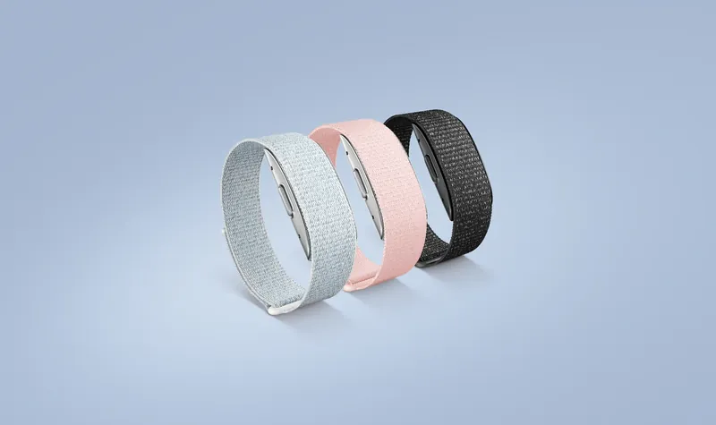
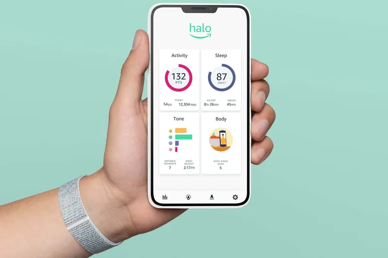
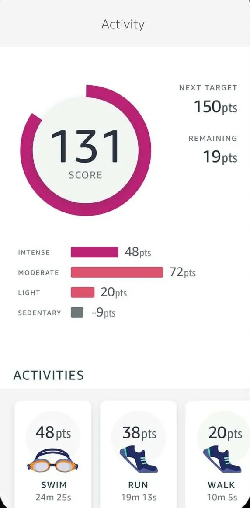
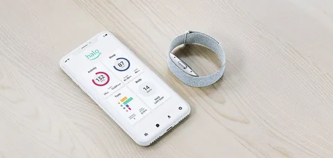
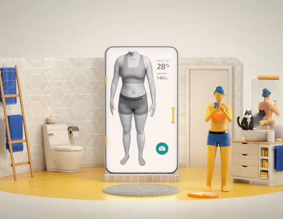
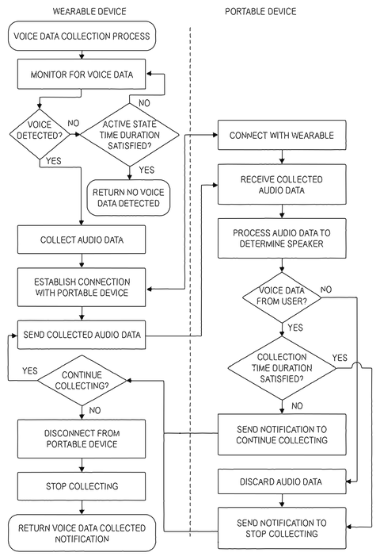
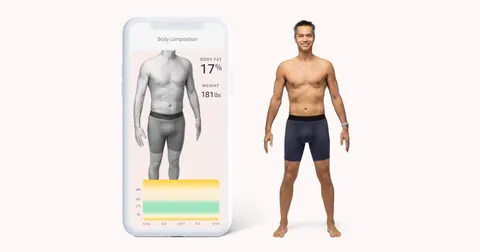
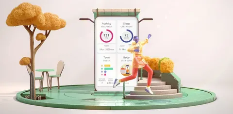

Amazon Halo
Amazon’s first health wearable: a band with no screen, paired with an app and a membership.



- Role
- Product lead for Body, Tone and Movement, on Halo’s founding team
- Patents
- 6 US patents, 2022 to 2026
- Launched
- August 2020
I joined Amazon Halo’s founding team in 2018 as the one product owner for Body, Tone and Movement: three health measures from a band and a phone. I set what each model was trained and checked against, and launched them in 2020 and 2021.
What I decided
Set what each model was checked against
For Body, Tone and Movement, I set what each model was trained and checked against: clinical X-ray scans of body fat, listener panels’ ratings of recorded voices, and the score a fitness expert would give.
Measured value at first use and weeks later
Novelty lifts a first rating, so we measured the value members saw in a result at first use, and again at about 2 and 4 weeks. Groups of people new to the product gave fast feedback on each change.
Judged the models on real-world data
What people perceived in the lab and at home differed sharply, so we judged the models on real-world data.
How it worked
Health measures that needed a clinic
An accurate body fat reading needed a clinical X-ray scan, which cost about $80 and a doctor’s prescription. A full movement screen needed a physical therapist and equipment.
A band with no screen, and one app
The band had no display, notifications or clock: everything a member saw appeared in the app. Its home screen held four tiles: Activity, Sleep, Tone and Body.

Three AI measures from a band and a phone
Body estimated body fat and built a 3D model of the member’s body from phone photos. Tone used words such as “hopeful” to describe how the wearer’s voice sounded to others. From June 2021, Movement scored mobility, stability and posture out of 100 from five movements filmed on the phone.

Analyzed on the phone or in the cloud, then deleted
Tone’s audio went from the band’s microphones to the phone, which analyzed and deleted it; only a summary reached the cloud. Body’s photos and Movement’s videos were processed in Amazon’s cloud, then deleted.

A new result every few weeks
Amazon recommended a Body scan every 2 weeks and a new Movement assessment every 2 to 4 weeks. In December 2020, Amazon added Insights from early-access feedback: trends such as a member’s peak periods of positivity.

Launch

“Amazon’s first health wearable is no Fitbit or Apple Watch clone”Fast Company, on Halo’s launch day
Amazon announced Halo on 27 August 2020, with invitation-only early access, and opened it to all US customers on 14 December 2020. The band cost $99.99 with 6 months of membership; after that, membership cost $3.99 a month.
What came next
Amazon ended Halo in 2023. The app was rated close to 4.5 stars, and its AI features set it apart, but it worked only with a Halo band. In a crowded wearables market, a place on the customer’s wrist was hard to earn. What I took from it: distribution sets a product’s ceiling as much as its quality does. An app that also worked with the Apple Watch or Fitbit a customer already wore could have earned a subscription of its own. Hearing how you sound to others, or measuring body fat close to a clinical scan from a phone, would still stand out today.